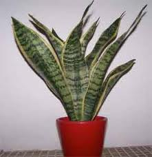

Sansevieria

Sansevieria (Sanseviéria de la famille des Liliacées)
Toxique pour le Korat.
Partie toxique pour les chats en général et le Korat en particulier :
Toute la plante.
Symptômes du processus pathologique :
A faible dose ces plantes entraînent des irritations locales : bouche (hyper salivation), appareil digestif (vomissements diarrhée), peau (dermites, etc.) etc. Les symptômes apparaissent rapidement après ingestion. L'évolution est en général favorable en 1 ou 2 jours. En grandes quantités, risque de symptômes nerveux.
Il existe différents types de toxicité (cardiaque, sanguine, digestive, à effet atropinique, etc.), celle du sansevieria est digestive.